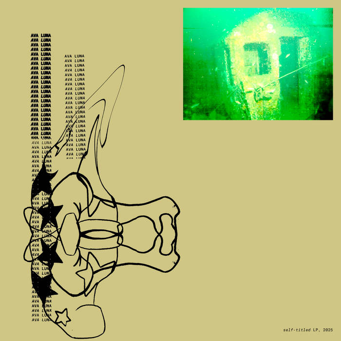
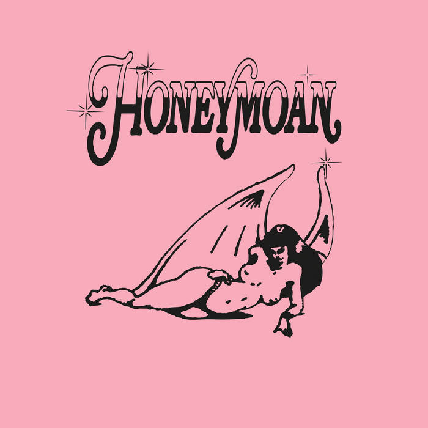
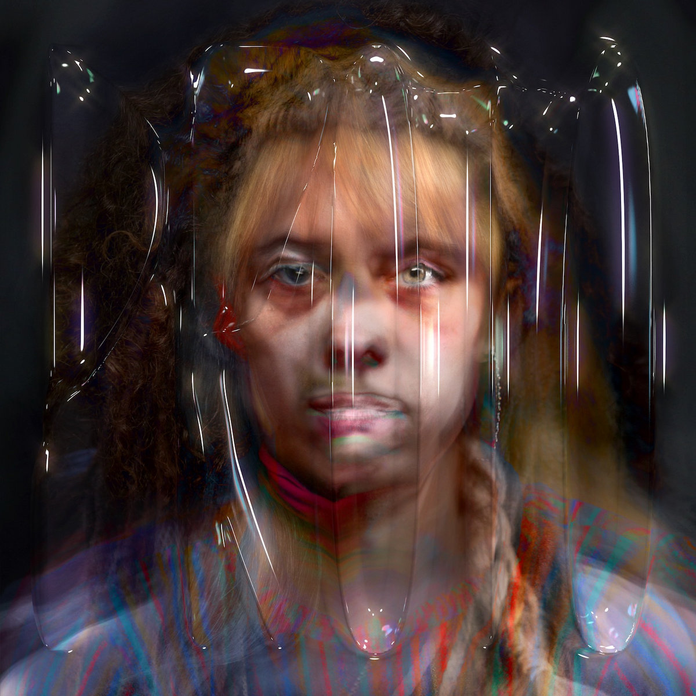
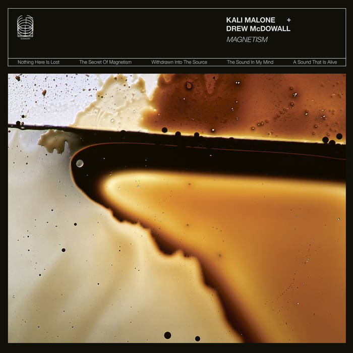
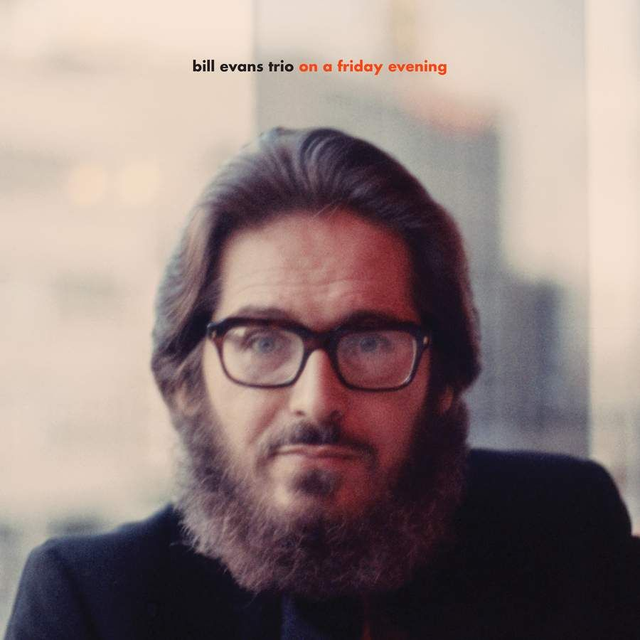
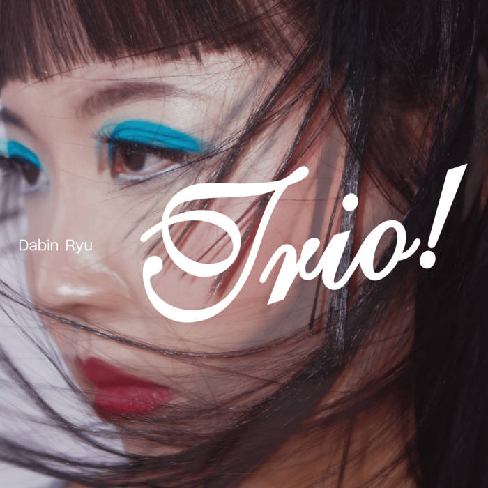
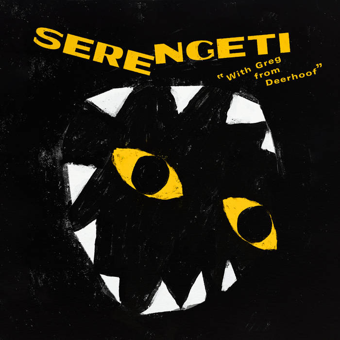
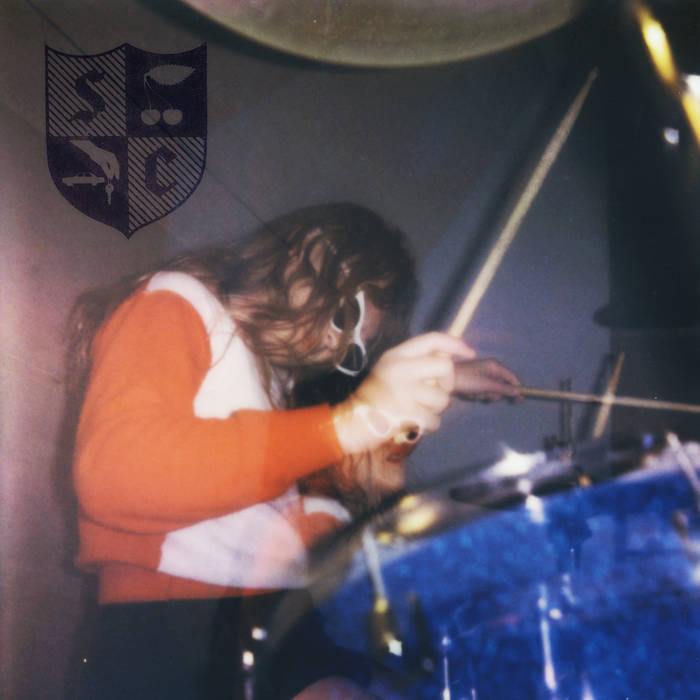

2026 in 52 albums
The concept's pretty simple. One album per week, not necessarily my favorite album of the week, not necessarily a new album, just one I listened to and liked.
Week 9 (2/22)

Ava Luna is era-defining for me (which essentially means I listened to them in college). Electric Balloon felt like a revelation (though I would later learn it was basically a revival of no-wave in the style of James Chance and the Contortions). I remember being floored by "Billz", the first single off Infinite House, with its oscillations between crushing wall of noise and chill groove; urgent and virtuosic, driven by the truly important questions: "who's gonna pay my bills?" (also, gotta say, "Steve Polyester" is one of the best non-Pynchon Pynchon character out there). I was lukewarm on Moon 2, I enjoyed it primarily in a second-order way, but it felt like it wasn't meant for me (maybe for someone with stronger ties to Devo and Talking Heads). I was bummed to hear in 2019 that we weren't gonna get any more Ava Luna, but Carlos Hernandez and Felicia Douglass continued to make music so it didn't feel over over (On Folly seemed very much a continuation of the Ava Luna storyline). Last week, getting a sudden urge to listen back to Moon 2 (maybe this time I'd "get it") I learned that Ava Luna came out with an album last year (!). On first listen I was, disappointed. It has none of the pent-up energy, the deep-cutting angst, less I-need-to-say-this-let-me-speak and more getting-older-and-throwing-up-the-hands. The album is a distillation of everything that makes Ava Luna unequaled composers and musicians, but I see parallels with the last Dirty Projectors project Songs of the Earth, in which composition becomes the sole vehicle for expression. Despite this, I listened through again, and then again, and again, and then it clicked: it's a damn fun album. That I think is the thread through everything they do. They're a group of super talented folks, getting together yet again to make music, building on their years-worth of experiences, and the product is, simply put, beautiful. The banter at the end of "My Walk" makes me smile every time I listen to it.
Week 8 (2/15)

Sometimes I feel like I'm getting too old for ironic depresso-mean-girl synth-pop-punk bullshit (also thinking of Dev Lemons here) but, yeah, catharsis to the max, cathart all the way home to this turned up loud in my little impreza.
Week 7 (2/8)
This week I watched the BU Symphony Orchestra's first concert of the year, whose program included a performance by Juan Shin─the CFA 2025 concerto competition winner─of the Korngold Violin Concerto. And, though hyperbolic, maybe with a touch of romanticism that parrots the piece itself, I'd say this felt like a once in a lifetime experience. Juan's playing was technically exquisite, graceful and easy, yet charged. The performance felt like a gift, especially with the intimacy of the setting: a small audience in a university auditorium on a Friday night (and, geez, what a stunning dress). It was the kind of performances that makes me want to "pay it forward", to make sure I too am giving in any way I can. I chose this album simply as a token (also the Britten is an all time favorite of mine).
Week 6 (2/1)

With all that's going on in the AI-sphere, this 2019 AI-music experiment feels almost quiant. It's a marked departure from Herndon's previous albums; when listening to Movement, one has the feeling that every synth began life as a sine wave and was molded to fit its aural purpose, wrestled into submission and imbued with a sense of the primordial. In PROTO, Herndon takes the voice as the starting point, and uses AI to aid the molding, a more powerful tool for a less giving medium. This is done to great effect, but I believe falls into the trap of many early-AI projects: AI is used in the way that reverb is used in recording, it creates "aura" but muddles personality (compare Casals and Ma on the cello suites). The AI of it all pushes Herndon towards "the middle", welcoming more than usual (not unflattering) comparisons─I get flavors of Oneohtrix Point Never, Caroline Shaw, Julia Holter, Purity Ring, and it's hard not to think of Imogen Heap, at least for folks listening to music in the aughts. Taken as an experiment (as I think it's intended) PROTO is ground-breaking, and I can't think of anyone I'd rather address the AI-music problem.
Week 5 (1/25)

Magnetism by the Kali Malone + Drew McDowall
Ambient can sometimes be inscrutable (at least for me) but occasionally you get lucky with the context in which you first hear a piece of ambient. I was in a weird place in my life, staring out at a pond on a cool fall day while my car was getting serviced. The emergent overtones and relentlessly compressed bass drones of the synthesizer just worked for this scene and headspace.
Week 4 (1/18)

On A Friday Evening by the Bill Evans Trio
Every so often, I need to listen to Evans. And after week one of the spring semester, I needed something with quiet strength. Evans for me straddles the Burkian beauty-sublime divide, the decisions he makes with regard to phrasing seem written in the clouds. I also kinda love Eddie Gomez's buzzy bass in this recording, it brings out the lightness and occasional humor of it all.
Week 3 (1/11)

Dabin Ryu has classical-pianist-energy. The opener "Vertigo" has Ólafsson precision (sub Bach for post-bop) and the intro of "In the Land of Oo-Bla-Dee" plays like a Prokofiev piano sonata. Also goes without saying, Joe Martin (bass) and Johnathan Blake (drums) hold their own, and have plenty of their own shining moments.
Week 2 (1/4)

With Greg from Deerhoof by Serengeti
An unexpected but natural collaboration, the 17 minute ad-hoc live session "I Got Your Password" is unreal. This album has been on my listening queue for years, but I think aptly captures 2026's off-the-bat absurdities.
Week 1 (1/1)

Unapologetically catchy, produced enough to not feel like a demo tape, but not so much that it has the sometimes-cloying polish of recent Waxahatchee (full disclosure, I have a sweet tooth). "Angel Wings" is the first ear-worm in a while I've enjoyed having.